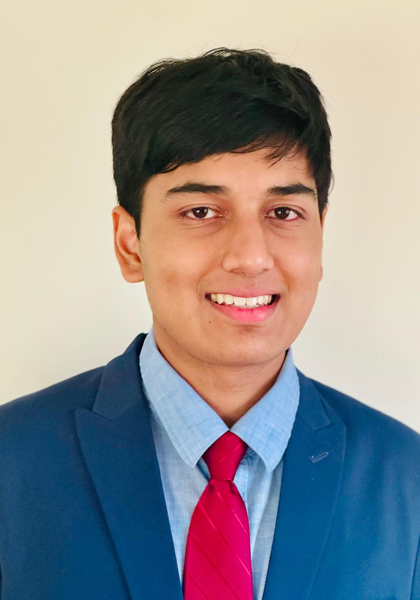

AP Courses Completed (13): Calculus BC, Statistics, Computer Science A, Chemistry, Biology, Environmental Science, Physics E\&M, Government, Macroeconomics, Microeconomics, Physics Mechanics, English Language, Spanish
In Progress: AP English Literature, AP Psychology, AP Human Geography, Engineering Capstone, IB Physics HL
IB Courses: World History & Geography, Spanish III
Completed Courses: Multivariable Calculus, Differential Equations with Linear Algebra, Applied Linear Algebra
Upcoming: Fall 2025 – EAS 549: Analysis and Modeling of Environmental Data; Winter 2026 – Organic Chemistry, Discrete Mathematics
Mechanical Engineering with Sustainability
Introduction to Newtonian Mechanics
Developed a spatiotemporal machine learning framework to forecast daily Acer pollen concentrations using meteorological and autoregressive predictors. Achieved a 16% performance improvement over climatology with neural models and generated high-resolution pollen maps via geostatistical interpolation. Grant awarded by MIDAS (PODS); manuscript in preparation.
Conducted interdisciplinary research projects combining IoT, AI, and environmental systems. Developed an intelligent aeration system for microbial fuel cells in wastewater treatment using machine learning optimization. Presented work at Michigan science fairs and won awards.
Conducted Hadley Cell climate modeling research focusing on atmospheric circulation dynamics, analyzing turbulent fluxes and diabatic heating patterns using computational fluid dynamics models with Julia programming.
Conducted bioinformatics analysis to identify proteins differentially expressed in major health conditions, investigating molecular mechanisms underlying COVID-19, opioid addiction, and mental health disorders.
Participated in DREAM Challenges on biomedical data analysis:
Panja, T., et al. (2024). Fetal sex influences the maternal plasma proteome in SARS-CoV-2. Society for Maternal-Fetal Medicine Annual Meeting, Washington, DC. DOI: 10.1002/pmf2.12028
Developed PhenoWatch App using R Shiny with machine learning for ecological pattern recognition, featuring automated species identification. Paper in progress.
Hands-on experience in ecological and micrometeorological instrumentation research, focusing on advanced sensors for energy and water exchange.
Attended workshops and talks, collaborated on AI technologies for clinical efficiency and patient outcomes. Assessed multimodal data (whole slide images, pathology reports, metagenomic sequences, EHRs) using Python, R, and HPC platforms.
Developed predictive models using Python and TensorFlow for early disease detection. Created ML pipeline for medical image analysis.
Orchestra & Composition Program. Performed in weekly concerts, received double bass instruction, and participated in composition workshops.
Led global network of 100+ chapters, organized annual conference (400+ projects), facilitated summer camps, and raised $10,000+. mircore.org/gidas
Hosted 200+ STEM/Robotics workshops, raised $3,100+ for Title I schools, led robotics teams to regional wins, and earned 3× PVSA Gold Awards.
Presented at National Expo (2,300+ attendees) and selected to shape festival programming. nationalstemfestival.com/advisory-committee
Conducted training programs on AI fundamentals and Olympiad preparation. usaaio.org/ambassadors
4-person team: Michigan Regional Champions (2023, 2024), Nationals Top 32 (2023), Regional Rank 2 (2025).
Panja, T., et al. (2024). Enhancing microbial fuel cell performance prediction and IoT integration using ML and renewable energy. Journal of Strategic Innovation and Sustainability, 19(1).
Panja, T. (2025, Oct). Novel insights into the role of turbulent fluxes and diabatic heating in shaping the spatiotemporal structure of the Hadley Cell. IEEE MIT URTC. DOI: 10.1109/URTC65039.2024 Panja, T. (2025, Oct). Dementia AI: A low-cost, privacy-preserving mobile app for dementia screening using multinomial logistic regression and computer vision. 12th International Conference on Neurology and Brain Disorders, Orlando, FL. Panja, T., et al. (2024, Jan). Deep learning in tumor microenvironment. Pacific Symposium on Biocomputing, Kohala Coast, HI. DOI: 10.7490/f1000research.1119682.1 National Panelist, MIT Beaver Works Summer Institute (BWSI), 2024: "You Belong in STEM."Conference Presentations
Invited Speaking Events